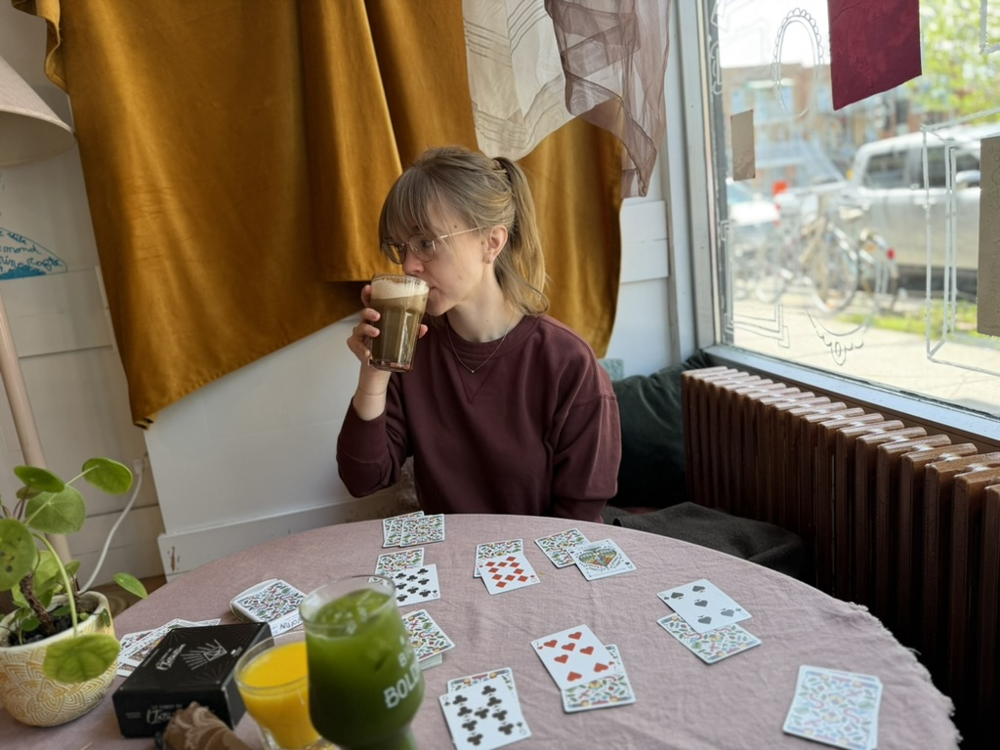

About Me

I'm a software developer based in Boston, currently building enterprise logistics solutions at Centiro and working toward my CIS master's degree at Boston University.
My path into software wasn't a straight line. I started in finance and accounting which is a bit unconventional but invaluable - I learned how to make sense of messy systems and translate what business people actually need into something technical teams can build. I started writing scripts myself early on, and the rest followed.
These days I work mostly in C# and .NET within a microservices architecture, and I've picked up a lot along the way: cloud platforms, event-driven design, the occasional deep dive into things I probably wasn't supposed to touch on yet. I like problems that require understanding both sides: why something matters and how to actually make it work.
Outside of work, I'm learning things like frontend development, database design, and networking which is a fun change of pace from the backend world I usually live in.